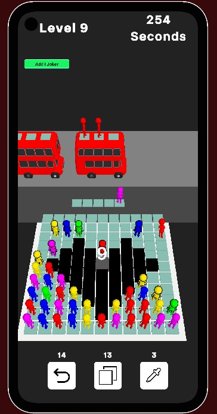

Wizard's Path
Build a wildly different mage every run in a fast-paced action roguelite.
All static game pages are listed here for players, press, and search engines.
Build a wildly different mage every run in a fast-paced action roguelite.

Flag Rush is an entertaining marble racing simulation where you can sit back and watch marbles representing world flags compete on dynamic tracks.

Stick Slasher is a chaotic physics-based 2D fighting game where every swing can disarm, dismember, or send enemies flying.

Sesli Sorular ile Milyoner is a trivia game built for Mobile platforms using Unity Engine, released on Dec 25, 2020.

Ability Runner - Evolve is a 2D endless runner with Turkish and English language support, developed with Unity for mobile and released on Jan 12, 2022.

A timed Turkish word game built around finding valid words before a bomb fuse reaches its end.

Bubble Pass is a color-matching arcade game built for mobile with Unity, released on Jun 14, 2022.

Simple Kalimba is an Instrumental Simulator game built for Mobile platforms, featuring basic graphics, released on Jan 10, 2021.

A community-driven Turkish trivia project spanning 45 categories with a dynamic difficulty system.

TimeLoop, a game developed using Unity Engine, was released on Aug 26, 2023.

Developed in just 2 days for ScoreSpace Jam #26, RGB Square is a unique Unity game that ranked 9th for 'Theme' and 14th overall among 147 entries.

My first completed 3D driving project, created as an early experiment with vehicle controls, cameras, environments, and mobile deployment.

Developed in 72 hours for Magara Jam 2023, this game is a 2D Puzzle where you solve various puzzles by creating clones.

'Junkman Driver' is an engaging arcade game developed with two beginner friends during a game jam.

Developed for ScoreSpace Jam #28 within 3 days on the theme 'Mutation', this game, which I developed with a friend who had just started game development, features a unique gameplay mechanic.

A technical prototype built to test AI-driven gameplay systems inside Unity.

Düğüm is a puzzle game developed in 48 hours for Boğaziçi Game Jam 24.

A recruitment assignment focused on recreating a bus puzzle gameplay loop and building a custom Unity level editor.

A one-touch, gravity-flipping arcade experiment: tap to rise, release to fall, and land on moving platforms for points as speeds increase and platforms shrink.

Purrfect Race is a cat racing and betting game.

An original mobile puzzle prototype developed for a mobile publisher test.

An early online multiplayer prototype built with Unity WebGL, NativeWebSocket, Node.js, and Express.

An unreleased student project developed collaboratively as a pixel-art fighting and progression experiment.